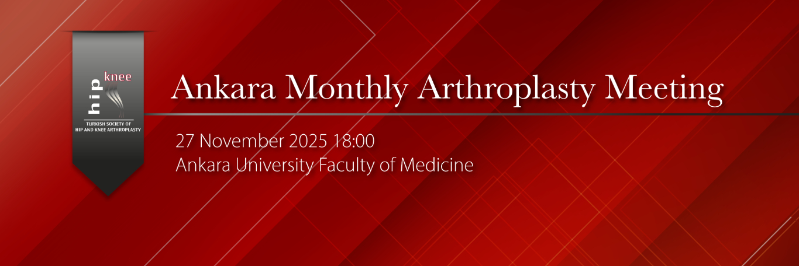

Dear Colleagues,
The Ankara Monthly Arthroplasty Meeting will be held on Thursday, November 27 at 18:30 at Ankara University Faculty of Medicine – Hasan Ali Yücel Conference Hall.
The topic of our November meeting will be “The History and Development of Hip and Knee Arthroplasty in Our Country.”
Prof. Dr. İlker Çetin and Prof. Dr. Mümtaz Alparslan, two of the pioneers of hip and knee arthroplasty in Türkiye, will share their knowledge and insights with us, drawing on more than half a century of professional experience. Many esteemed professors who accompanied them on this professional journey will also take part in the session. In this valuable meeting, which gives us the opportunity to hear the entire history of arthroplasty in Türkiye firsthand, the history and development of hip and knee arthroplasty in our country will be discussed.
Wishing for a productive monthly meeting, we invite all our colleagues—especially our young residents and specialists, whom we believe will greatly benefit from this session—to attend.
Prof. Dr. Kerem Başarır (on behalf of KADAD)
Assoc. Prof. Dr. Hakan Kocaoğlu (Ankara University)
Moderator:
Prof. Dr. Bülent Erdemli
Program:
18:00 – 18:30 Refreshments – Dinner
18:30 – 18:45 “The Development of Total Hip Arthroplasty in Our Country”
Prof. Dr. İlker ÇETİN
18:45 – 19:00 “The Development of Total Knee Arthroplasty in Our Country”
Prof. Dr. Mümtaz ALPARSLAN
19:10 – 19:30 Discussion
19:30 – 20:00 Case Discussions
Note: For cases you would like to have discussed or results you would like to present, please contact us before the meeting for planning purposes.
Contact for the meeting:
Dr. Hakan KOCAOĞLU
hkn.kocaoglu@gmail.com
Dr. Kerem BAŞARIR
basarirkerem@yahoo.com
Prof. Dr. Kerem BAŞARIR
Nextlevel Office Block A, Floor 8, No:34
Kızılırmak Mah., Dumlupınar Boulevard No:3A
Söğütözü – Çankaya / ANKARA
